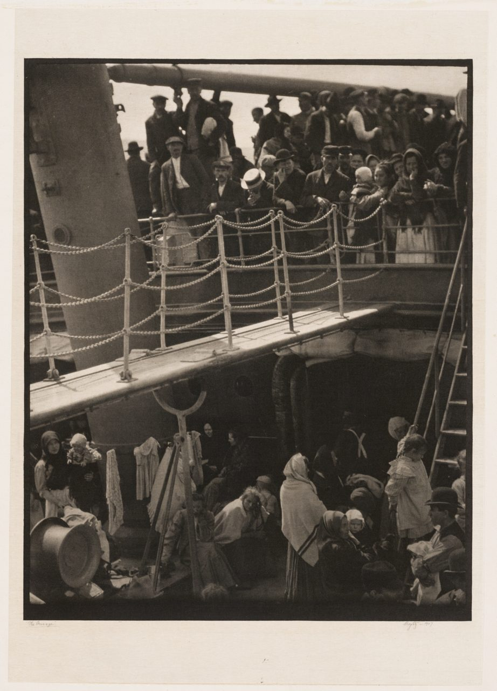

← 藝術101名畫背後的故事 EP09
三等艙
阿爾弗雷德・史蒂格利茲・1907（1911年首次刊於《攝影作品》Camera Work）

一張照片，讓攝影第一次被當成藝術。
頭等艙往下看
1907年6月，史蒂格利茲帶著家人搭威廉二世皇帝號從紐約前往歐洲。他坐頭等艙，有一天在船上散步，往下看見擠在下層的三等艙乘客。他跑回艙房拿相機，手上只剩一張準備好的玻璃底片。
一個常見的誤會
很多人以為照片裡是被拒絕入境、要被送回去的移民。但這艘船其實是從紐約開往歐洲，Wikipedia 引述的研究認為，船上很多人是持短期簽證到美國做工、準備回鄉的工匠。
形狀，才是主角
看中間那條白色斜橋，把畫面切成上下兩個世界；上方人群中還有一頂白色圓草帽。史蒂格利茲說，是這些形狀和線條吸引了他。照片1911年刊在《攝影作品》，據說畢卡索看了說，這個攝影師和他是同一種精神。
下次看到它，先看這裡
白色斜橋 斜跨畫面的白色通道，切開上下兩層
白色圓草帽 上層人群中間，一頂亮白色的平頂草帽
右側的梯子 右邊斜靠的梯子，和斜橋形成交錯線條
作品資料
阿爾弗雷德・史蒂格利茲（Alfred Stieglitz）
《三等艙》The Steerage，1907（1911年首次刊於《攝影作品》Camera Work）
照片（凹版照相印刷 photogravure） 依版本不同：1911年《攝影作品》版約 19.4 × 15.1 cm；1915年大版約 32 × 25.8 cm
多處館藏：大都會藝術博物館、紐約現代藝術博物館（MoMA）、芝加哥藝術博物館等
《三等艙》The Steerage，1907（1911年首次刊於《攝影作品》Camera Work）
照片（凹版照相印刷 photogravure） 依版本不同：1911年《攝影作品》版約 19.4 × 15.1 cm；1915年大版約 32 × 25.8 cm
多處館藏：大都會藝術博物館、紐約現代藝術博物館（MoMA）、芝加哥藝術博物館等